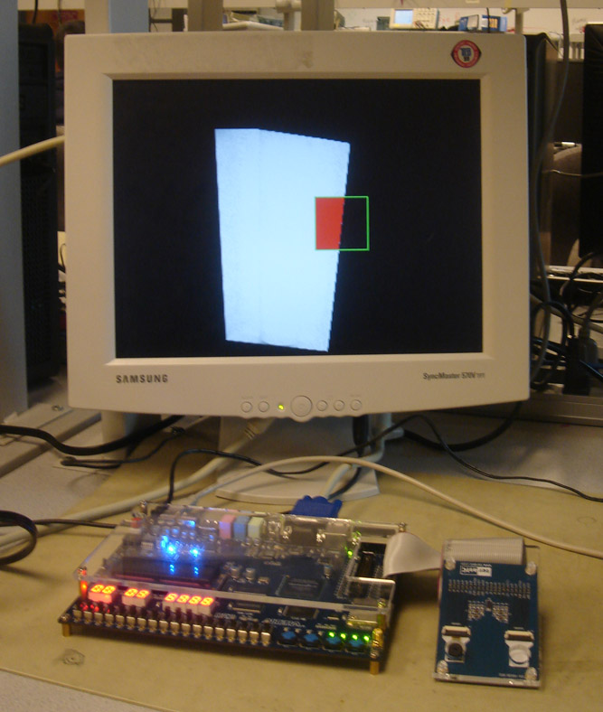

Our project's goal was to lock onto and track a laser pointer or small light source using the Altera DE2 board. We used a Terasic 1.3 Mega Pixel CMOS camera to capture continuous streaming picture, converted the captured images into black and white and stored them into SDRAM. SRAM was used as the VGA buffer before the image was displayed on the VGA display.
Figure 1 below shows the search and track box. Initially, the box is set at the center of the screen and is colored green. When a light source moves into the box, the box will become locked onto the light source and turn blue. In addition, the light source captured inside the box will be highlighted red. Once the box has locked onto a light source, it will begin to track and follow that light source around the screen. If the light source moves off screen, the tracking box will stay flush against the side of the screen ready for the light to enter its search area again.
